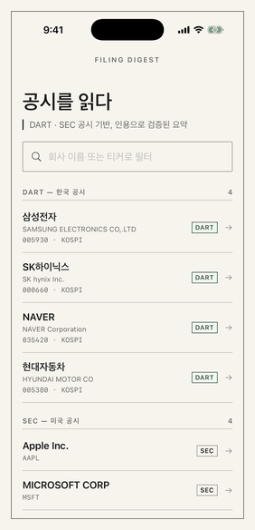
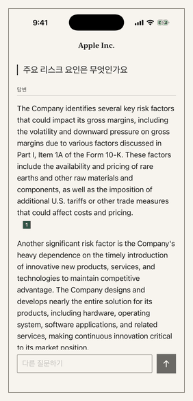
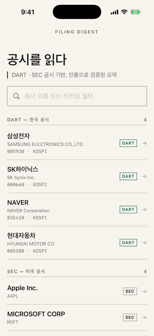
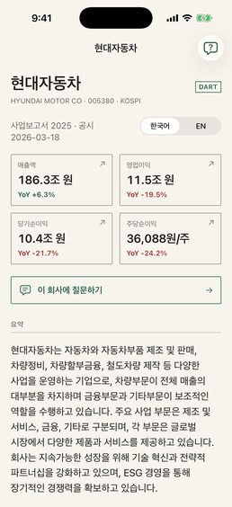
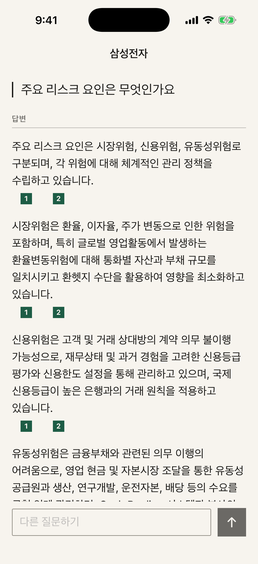
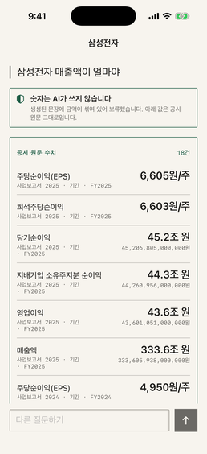
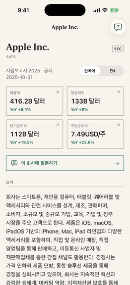
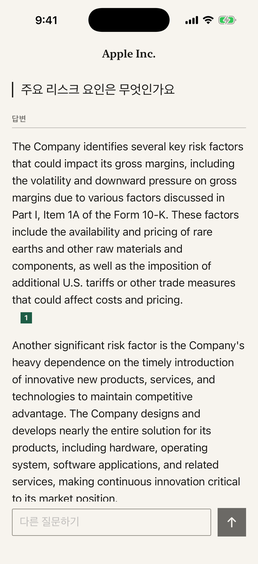
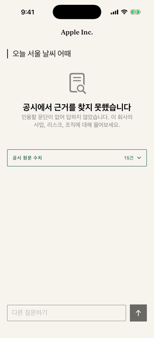
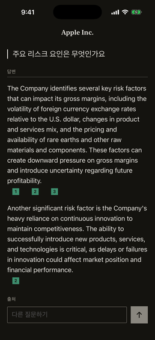

AUTHORITATIVE TRACK
Structured figures
DART and SEC facts remain exact, source-bearing values. They never pass through the language model.
- Exact decimal storage
- Reporting-period scope
- Openable filing source
READ-ONLY PORTFOLIO DEMO
Filing Digest turns Korean DART and US SEC filings into bilingual, source-linked iOS reading flows—without letting generated prose invent the numbers.
This is a read-only portfolio demo built from captured app sessions. No live API calls, credentials, analytics, or user data are involved.

01 / PRODUCT WALKTHROUGH
The captured flow below exercises the product’s central promise: browse a bounded corpus, read structured facts, ask a question, and follow each claim back to its filing evidence.

Company coverage is visible before a question is asked.
Every metric links to the regulator filing that reported it.
Korean questions can retrieve evidence from US filings.
Claim markers resolve to bounded excerpts and openable filing sources.
IMPLEMENTED SURFACES








02 / EVIDENCE MODEL
Financial facts and generated narrative travel separately, then meet in the client only after deterministic checks have run.
AUTHORITATIVE TRACK
DART and SEC facts remain exact, source-bearing values. They never pass through the language model.
NARRATIVE TRACK
Retrieved filing chunks constrain generation. Missing or invalid evidence causes the prose to fail closed.
REPOSITORY EVIDENCE
Architecture decisions, evaluation harnesses, tests, and the full SwiftUI/FastAPI source live beside this demo.